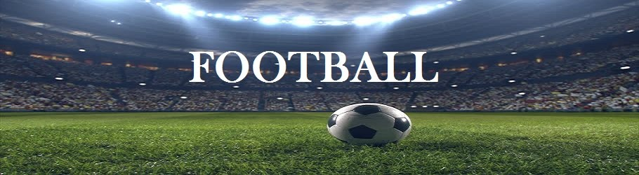

Soccer is a team sport played by a team of 11 players against another team of 11 players on a field. The team has one designated goalkeeper and 10 outfield players. Outfield players are usually specialised in attacking or defending or both. A team is typically split into defenders, midfielders and forwards, though there is no restriction on players moving anywhere on the pitch. It is known as soccer in North America, but is called football in most of the rest of the world. Its full name is Association Football.
Records trace the history of soccer back more than 2,000 years ago to ancient China. Greece, Rome, and parts of Central America also claim to have started the sport; but it was England that transitioned soccer, or what the British and many other people around the world call “football,” into the game we know today.
for more informationCoaches may use a memory trick known as the “Five S's” to ensure that they address each part of the mandatory equipment with their players. From head-to-toe, these are: Shirt, Shorts, Shinguards, Socks, and Shoes.
click here for more informationMessi has scored over 750 senior career goals for club and country, and has the most goals by a player for a single club. Born and raised in central Argentina, Messi relocated to Spain to join Barcelona at age 13, for whom he made his competitive debut aged 17 in October 2004.
Ronaldo holds the records for most appearances (180), most goals (139) and assists (42) in the Champions League, most goals in the European Championship (14), most international goals by a male player (115), and most international appearances by a European male (184).